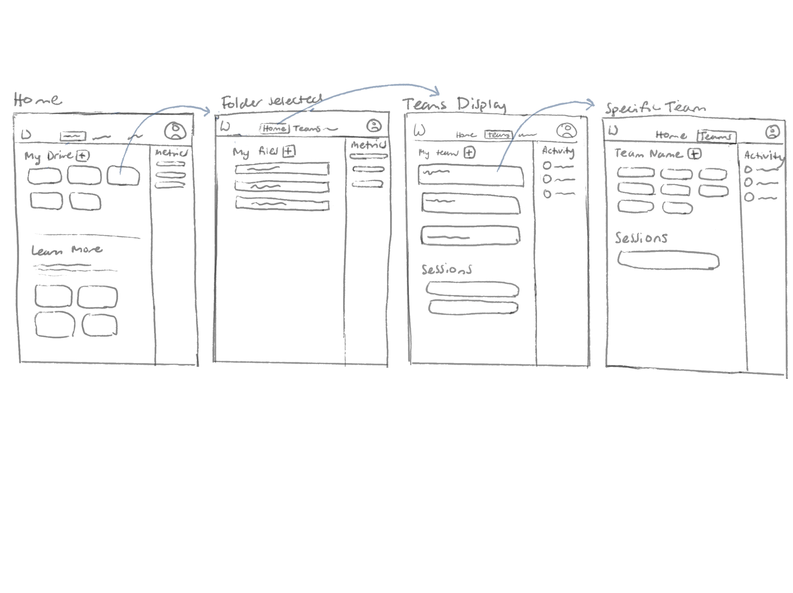
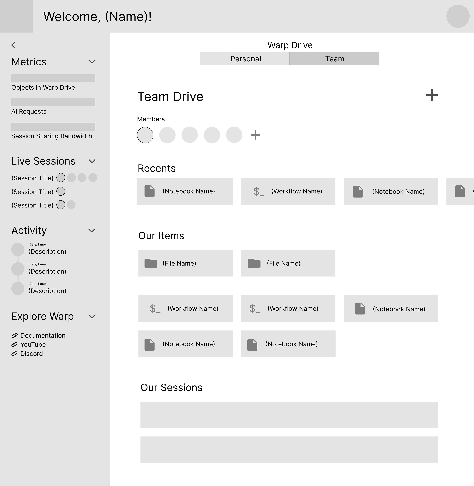
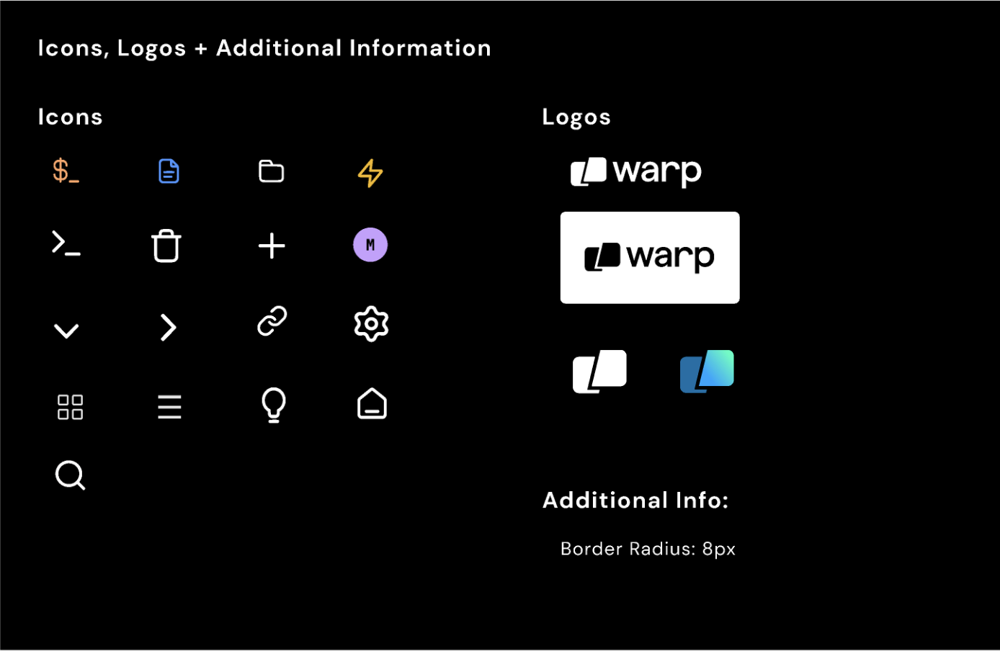
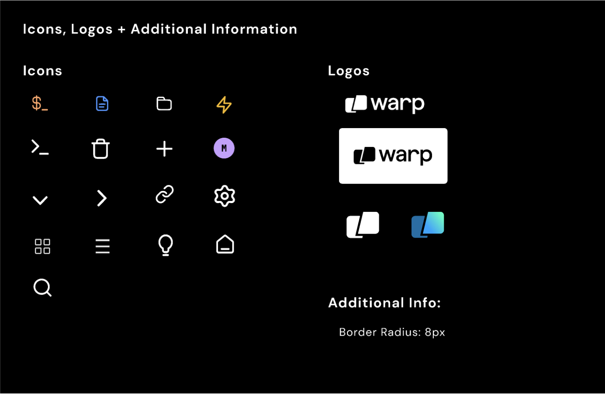

Overview
The goal of this project was to design a home page for the startup Warp that serves as an aggregator to allow for increased discovery and usage of Warp’s features. My team worked directly with the founders to create this design.
Project Brief
Warp is a customizable terminal with collaborative tools and AI integration. We were tasked with designing their homepage.
My Role
I worked particularily on creating the low-fi and high-fi wireframe mockups in Figma with a focus on clarity and customizability. My team worked collaboratively throughout the process, each giving constant input and feedback.
Project Focus:
UI/UX design, product design, collaboration
Design Team:
Alex Hogue, Megan Ball, Rachel Brooks, Sydney Meza
Tools:
Figma
View Final Design:
Final Figma
Introduction
A Bit About Warp

Warp is a reimagined command-line terminal; it is an AI driven platform that allows developers to efficiently code in the terminal and work collaboratively.
Problem
Warp does not currently have a centralized home page for users to view information about their files, teams, usage, account info, and learn more about Warp. Right now, most of this information is housed in settings, making it difficult and unintuitive for users to find, especially new users who would be unfamiliar with the Warp system.
Users impacted: This feature would be most useful for existing Warp users who are somewhat seasoned with the product, but this would also be an important introduction to Warp for new users through product education feature opportunities.
Solution
We designed a centralized home page that adapts to a user's state (new vs. seasoned user) in order to efficiently provide users access to their work, teams, personal information, and educational resources. We focused on accessibility to make Warp more efficient for users to navigate and more approachable to new users by adding direct access to education materials and Warp communities.
Early Sketching
I began by creating sketches to explore different layouts for the screen and modules:




Design Decisions
Based on the initial sketches, the following focues were implemented into our wireframes:
- focus on intuitiveness with inspiration from Figma Home, Google Drive and GitHub home
- centralize live sessions, user metrics, activity, and educational content with use of a sidebar
- consideration of user states (both new and active users)
- focus on customizability
- split up team and personal functionality
First-Iteration Wireframes
New User - Personal Page:

Active User - Personal Page:

Active User - Team Page:
Active User - Side Bar Hidden:

Intended Outcome
The goal was to create a user-friendly, glanceable interface that allows users to understand their current state and easily access their content.
We achieved this through a split layout: the left sidebar displays metrics, live sessions, activities, and resources, and the main section displays folders, files, and sessions. Additionally, since Warp is designed for collaboration, it was critical for users to seamlessly switch between personal and team views.
Low-Fidelity Wireframes
Revisions
Based on feedback from the Warp founders as well as peers, we revised our initial drafts with the following in mind:
- We felt that having four screens was too few to demonstrate user interaction, so we created more screens.
- We removed metrics from the left sidebar to clean up the sidebar as it did not feel necessary for users to constantly see this information (better in the account page).
- We want to make the drive more customizable and we added sorting, filters, and two modes for viewing.
- We changed the toggle (navigating between “Personal” and “Team”) to a drop-down since the founders clarified that in the future Warp would allow users to be on multiple teams.
- We wanted to make it easy to navigate between the home page and terminal and opted to use a top nav bar, added a new tab for the home page, replacing the drive tab since drive is now integrated into the home.
Revised Wireframes
Personal Homepage: Active User
These wireframe displays the potential usage flow through an active user's personal page including features such as collapsable sidebar, list view, new files pop-up, and entering a folder

Personal Homepage: New User
This displays the state of a new user with no files and with an emphasis on educational tools

Team Homepage: Member
This displays when an active user navigates to a team homepage, displaying team activity, files, and members list

Team Homepage: Admin
This displays the team view from an admin's perspective with access to team settings and billings

High-Fidelity Prototype
Style Guide
 


User Considerations
We based the style guide on the current Warp brand guidelines, adding additional elements including specific font sizes and an icon library to match our design.
- The Warp brand guidelines focus on a minimal, dark-mode style. This allows the product to work seamlessly for developers, who often work with software in dark mode.
- Users are often online for long periods of time, so having a website that is minimalistic, professional, and easy to read is critical.
- The main font is sans-serif, simple, and readable, and the terminal font is very similar to that of other terminals on the MacOS and Linux systems, aligning with users' mental model.
- Warp uses primarily black and white of varying shades, matching with the dark mode theme as well as additional colors as accents that create fun and eye-catching elements that make Warp more than a basic terminal.
Accesibility
We checked the style guide with WCAG (Web Content Accesibility Guidelines) and found that the dark gray on black could be an issue for accessibility, so we added more contrast between the text and buttons and the background. The icons are minimalistic and simple to make it clear what each icon represents to a user.
Final Prototype
Our prototype uses the same structure and design as our final wireframe which is shown and described above. We added in new colors, fonts, and icons as indicated by our style guide to bring our design to life. The design focuses on depicting the design of the home page based on the user state and the various actions that they can take.
Active user navigating through their personal home page to a team drive:
New user's home screen:
Admin's team drive:

We emphasized key design principles in our prototype to fulfill our users' needs and ensured that our design aligns with the mental model users currently have of a homepage/dashboard.
We implemented hierarchical design to create an efficient layout for users. The scan pattern is based on the F pattern, where users scan horizontally across the top, then vertically down the left side, and finally horizontally across the screen. With this in mind, we have the welcome and navigational information across the top, the sidebar on the left side with key information, and access to files in the center of the screen. This allows users to quickly find what they need on the page. Along with clear layout, I also ensured that there was sufficient contrast for accessibility.
View the prototype in Figma here!
Next Steps
In our final meeting with the Warp founders, we recieved a lot of praise as well as useful feedback that I hope to to implement to revise the design as well as inspire future projects:
- Think about what will happen when the sidebar gets filled with a lot of activity information. How will it stay clean and clear?
- Consider the order of content displayed to new users; perhaps educational content should be first and the page update as the user becomes more experienced.
- Explore where the members, settings, and billings buttons would direct an admin
Reflections
Doing this project, I learned a lot about designing as a team and working with clients in order to achieve a design goal. Communication was a huge part of this process– both within my team and with the startup founders. From the very beginning, I prioritized understanding the needs and expectations of our client, which involved active listening during meetings, thoughtful questions, and thorough documentation of their thoughts and feedback.
One key challenge was translating their vision into tangible designs. This required not only creative problem-solving but also a deep understanding of design principles and user experience. My team took their feedback and continuously iterated on our designs, constantly striving to align to their expectations while incorporating our own expertise and insights.